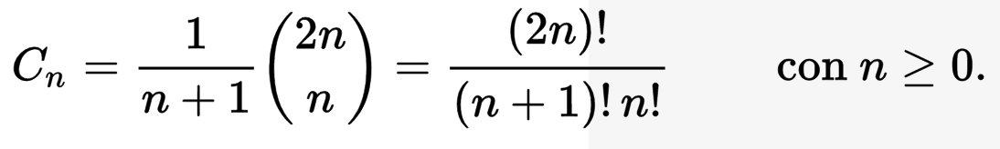

Matemáticas II
Fibonacci
0, 1, 1, 2, 3, 5, 8, 13, 21, 34...
fibo(0) = 0
fibo(1) = 1
fibo(n) = fibo(n - 1) + fibo(n - 2)
long fibo[] = new long[50];
fibo[0] = 0;
fibo[1] = 1;
for(int i = 2; i < 50; i++) {
fibo[i] = fibo[i - 1] + fibo[i - 2];
}
Números de catalan
Secuencia de números naturales que aparece en diferentes problemas de conteo.
1, 1, 2, 5, 14, 42, 132, 429, 1430...
De cuantas formas se pueden balancear n parentesis?.
| Número de parentesis | Formas de balancear | Número de formas |
| 0 | 1 | |
| 1 | () | 1 |
| 2 | ()(), (()) | 2 |
| 3 | ((())), ()()(), (())(), ()(()), (()()) | 5 |
Cálculo de un número de Catalán
Cálculo de los números de Catalán
static int MAX = 30;
static long catalanNumbers[] = new long[MAX+1];
static void catalan(){
catalanNumbers[0] = 1;
for(int i = 1; i <= MAX; i++){
catalanNumbers[i] = (long)(catalanNumbers[i-1]*((double)(2*((2 * i)- 1))/(i + 1)));
}
}
Coeficientes binomiales
Número de formas en que se puede extraer subconjuntos a partir de un conjunto dado.
En una clase de 35 alumnos se quiere elegir un comité formado por tres alumnos. ¿Cuántos comités diferentes se pueden formar?

static long binomialCoefficient(long n, long r) {
if (r < 0 || n < r) {
return 0;
}
r = Math.min(r, n - r);
long ans = 1;
for (int i = 1; i <= r; i++) {
ans = ans * (n - i + 1) / i;
}
return ans;
}
Euler Totient
totient(n) es la cantidad de números menores o iguales a n que son coprimos con n.
static void totient(int n, int resultados[]){
boolean aux[]=new boolean[n];
for(int i = 0; i < n; i++) {
resultados[i]=i;
}
for(int i = 2; i < n; i++){
if(!aux[i]) {
for(int j = i; j < n ; j+=i){
aux[j]=true;
resultados[j]= resultados[j]-(resultados[j]/i) ;
}
aux[i] = false;
}
}
}